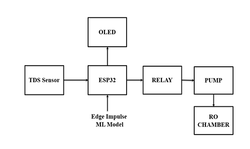

AN EDGE AI-BASED SMART WATER TDS MONITORING
AND RO PURIFICATION CONTROL
Project Description
This project presents an Edge AI-based smart water quality
monitoring and RO purification control system. It uses TDS
and temperature sensors to monitor water quality. ESP32
processes the collected data using a TinyML model developed
through Edge Impulse. Based on water quality classification,
the system automatically controls the RO pump through a
relay module.
Block Diagram

Tools and Technologies Used:
Hardware Components
- ESP32 Microcontroller
- TDS Sensor
- Temperature Sensor
- Relay Module
- RO Pump
- LCD / OLED Display
Software Technologies
- Arduino IDE
- Edge Impulse
- TensorFlow Lite
- Embedded C / C++
- Machine Learning (TinyML)
- Internet of Things (IoT)